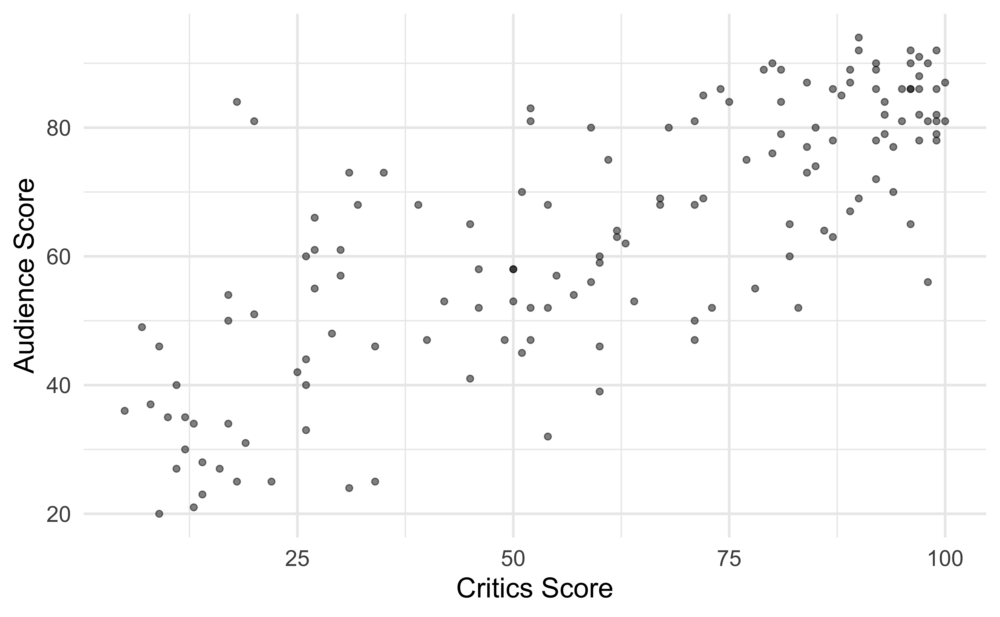

# load packages
library(tidyverse) # for data wrangling
library(tidymodels) # for modeling
library(fivethirtyeight) # for the fandango dataset
# set default theme and larger font size for ggplot2
ggplot2::theme_set(ggplot2::theme_minimal(base_size = 16))
# set default figure parameters for knitr
knitr::opts_chunk$set(
fig.width = 8,
fig.asp = 0.618,
fig.retina = 3,
dpi = 300,
out.width = "80%"
)SLR: Model fitting in R with tidymodels
STA 210 - Spring 2022
Dr. Mine Çetinkaya-Rundel
Welcome
Announcements
- If you’re just joining the class, welcome! Go to the course website and review content you’ve missed, read the syllabus, and complete the Getting to know you survey.
- Lab 1 is due Friday, at 5pm, on Gradescope.
Recap of last lecture
Used simple linear regression to describe the relationship between a quantitative predictor and quantitative outcome variable.
Used the least squares method to estimate the slope and intercept.
We interpreted the slope and intercept.
- Slope: For every one unit increase in \(x\), we expect y to be higher/lower by \(\hat{\beta}_1\) units, on average.
- Intercept: If \(x\) is 0, then we expect \(y\) to be \(\hat{\beta}_0\) units.
Predicted the response given a value of the predictor variable.
Defined extrapolation and why we should avoid it.
Interested in the math behind it all?
See the supplemental notes on Deriving the Least-Squares Estimates for Simple Linear Regression for more mathematical details on the derivations of the estimates of \(\beta_0\) and \(\beta_1\).
Outline
- Use tidymodels to fit and summarize regression models in R
- Complete an application exercise on exploratory data analysis and modeling
Computational setup
Data
Movie ratings
- Data behind the FiveThirtyEight story Be Suspicious Of Online Movie Ratings, Especially Fandango’s
- In the fivethirtyeight package:
fandango - Contains every film that has at least 30 fan reviews on Fandango, an IMDb score, Rotten Tomatoes critic and user ratings, and Metacritic critic and user scores

Data prep
- Rename Rotten Tomatoes columns as
criticsandaudience - Rename the dataset as
movie_scores
Data visualization
Using R for SLR
Step 1: Specify model
Step 2: Set model fitting engine
Step 3: Fit model & estimate parameters
using formula syntax
A closer look at model output
movie_fit <- linear_reg() %>%
set_engine("lm") %>%
fit(audience ~ critics, data = movie_scores)
movie_fitparsnip model object
Fit time: 2ms
Call:
stats::lm(formula = audience ~ critics, data = data)
Coefficients:
(Intercept) critics
32.3155 0.5187 \[\widehat{\text{audience}} = 32.3155 + 0.5187 \times \text{critics}\]
Note: The intercept is off by a tiny bit from the hand-calculated intercept, this is likely just rounding error in the hand calculation.
The regression output
We’ll focus on the first column for now…
Prediction
Application exercise
followed by a demo of exporting your work and uploading to GradeScope
Recap
- Used tidymodels to fit and summarize regression models in R
- Completed an application exercise on exploratory data analysis and modeling